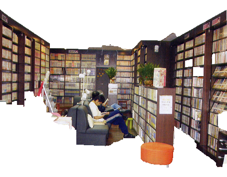
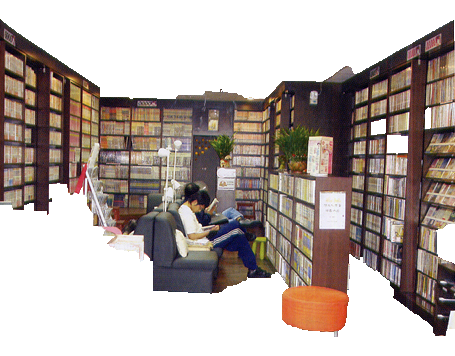

ANIME REVOLUTION
アニメ革命

In Japan, Anime/Animation means all forms of animated media. Depending on where you are, the style, the color, the production may be different. My first anime experience is monga which is comic book around 2002. As time goes by, the manga became more like a magazine form, then to digital files, online comic books, 2D anime. In the end, we now have 3D animae. The Internet plays a pretty big role intern in anime’s evolution. As soon as anime step into the cloud, it has been shared millions of people. It speed up the anime industry’s to produce each anime. Now we have this unlimited online resource to watch anime anytime you want.
Currently, my favor anime is Demon Slayer/Kimetsu no Yaiba 鬼滅之刃. This website is also inspired by Kimetsu anime style. Kimetsu no Yaiba is a Japanese manga series written and illustrated by Koyoharu Gotōge. It has been serialized in Weekly Shōnen Jump since February 2016, with its chapters collected in 17 tankōbon volumes as of October 2019.I mostly watch this anime on my smartphone...
The earliest way to get into anime was by going to the rental bookstore to rent the comic book. They usually provide a membership card that allows people to put credit on their cards. One iconic feature in the bookstore is the giant movable bookshelf. The other significant cherecter of the comic book is the yellowish kind of paper. Before technology became that advance, paper quality is also not that ideal.
 

Back of the time, when the heavy desktops were available to people, the comic book will be copied into Floppy Disk. In that way, people can bring the floppy disk to their computer to see the scan version of the comic book. It directly took over the rental bookstore's business.
After the Internet was widely used for showing the image, digital comic books start appeared on some websites. People can pretty much just search the anime that they want to read and they will find some kind of information. Of course, copyrights become the issue. At this point, most rental bookstores had closed down their business unless they change their business model. For an instant, some bookstores transform into a cafe or afternoon tea house so the customers will continue to visit but not necessary for the anime.
In the meantime, anime has developed to the video form and available for people to rent from Buster or television channels. The quality of the anime was still staying at 2D, low resolution, and dull. However, that was whatever people can get the best, so we lived with it. The place like Buster would usually get crowded on Friday night or holiday season. And, just like those rental bookstores, they all have some kind of loyalty program. This trend continues until the internet has developed enough to handle uploading the video or the device is cheap enough for average income families to purchase. Going to Buster used to be my price if I had some kind of outstanding achievement.
3D technology was a huge improvement in the anime industry. The Internet is also developed much further than ever. Many people and companies upload anime to many platforms. Now people have platforms like Netflix, Kanjiro, Youtube, etc. to watch a whole bunch of different kinds of anime. Furthermore, we even have 4D technology. The evolution of anime reaches the highest point ever and it keeps going. What's worth for us to discuss is the issue caused by all these technologies such as copyrights, human health, crime, etc. All these changes represent the human society is moving toward some amazing future. However, we still need to have the social conscious of the cause-effect of everything.